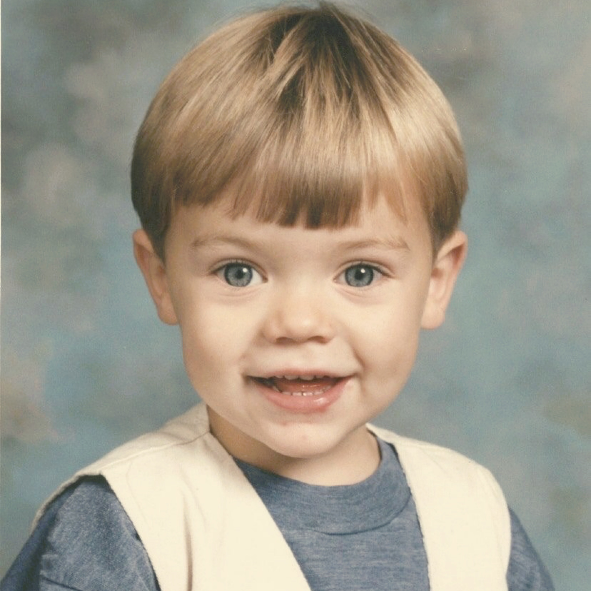
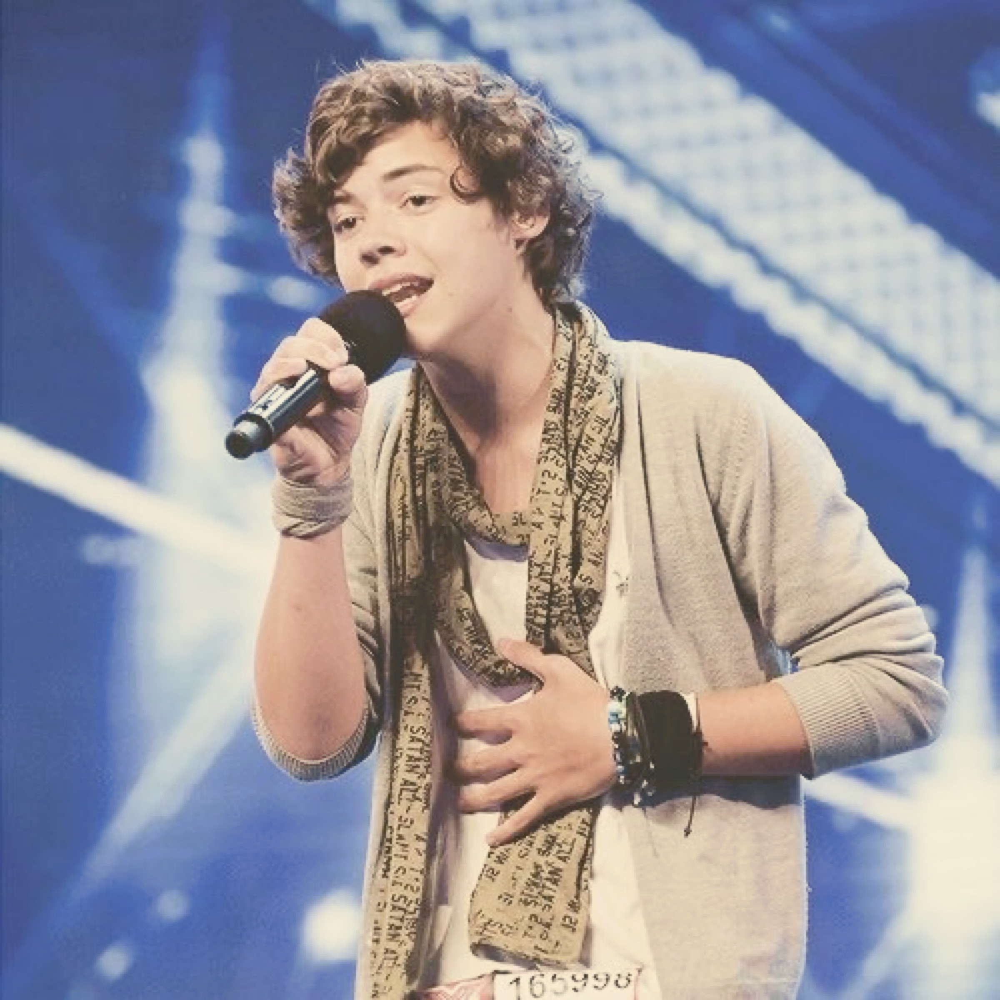

 Harry Edward Styles was born on February 1, 1994, in Bromsgrove, Worcestershire, in the West Midlands region of England. His parents, Des and Anne, divorced when he was 7 years old. He and his sister Gemma were brought up by their mother in the town of Holmes Chapel in Cheshire. His mother was later remarried, to Robin Twist.
Styles attended Holmes Chapel Comprehensive School, where he and three of his friends formed a band called White Eskimo. Styles was White Eskimo's lead singer, and the band was popular enough to win a band competition at their school. After school and on weekends, Styles worked at the W. Mandeville bakery in Holmes Chapel.
 In 2010, when he was 16 years old, Harry competed in the seventh season of the television show The X Factor, singing Stevie Wonder's "Isn't She Lovely" as his audition song and Oasis' "Stop Crying Your Heart Out" in a later round. He was cut before the finals, but in a surprise move, judges Nicole Scherzinger and Simon Cowell put him together with fellow competitors Niall Horan, Liam Payne, Louis Tomlinson and Zayn Malik to form a new group act for the remainder of the competition.
Performing as One Direction (a name reportedly suggested by Styles), the five boys became one of the most popular contenders in the X Factor finals that season. Although they finished the competition in third place, they were immediately signed to Cowell's Syco music label.